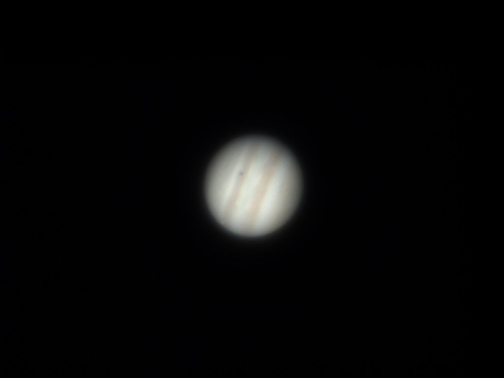

Yihao's Astrophotography Collection
Here are some of my favorite astrophotography shots:

Horsehead Nebula (IC 343)
Telescope: Sky-watcher quattro 150P
Camera: ZWO ASI585MC pro
Equatorial Mount: Sky-watcher SA GTI
Filter: ZWO 1.25" Duo-Narrowband Filter
Frames: 37*300
11th Nov 2024 at Buffalo

Triangulum Galaxy (M33)
Telescope: Sky-watcher quattro 150P
Camera: ZWO ASI585MC pro
Equatorial Mount: Sky-watcher SA GTI
Filter: ZWO 1.25" Duo-Narrowband Filter
Exposure time: 6000s
10th Oct 2024 at Buffalo

Caldwell 30 & Stephan's Quintet
Telescope: Sky-watcher quattro 150P
Camera: ZWO ASI585MC pro
Equatorial Mount: Sky-watcher SA GTI
Filter: ZWO 1.25" Duo-Narrowband Filter
Exposure time: 3000s
10th Oct 2024 at Buffalo

This is a photo of the Andromeda Galaxy, which is 2.5 million light-years away from us and is the closest galaxy to our Milky Way. In 1764, it was cataloged as the 31st entry in the Messier Catalog of star clusters and nebulae by the astronomer Messier, hence the name M31.
The white bright spot on the left side of M31 is a dwarf galaxy called M32, which has been captured by M31's gravity.
Telescope: Sky-watcher quattro 150P
Camera: ZWO ASI585MC pro
Equatorial Mount: Sky-watcher SA GTI
Filter: ZWO 1.25" Duo-Narrowband Filter
Exposure time: 4500s
6th Oct 2024 at Buffalo

The Pleiades (M45) is one of the most famous open star clusters in the night sky, known for its compact and bright stars.
Located approximately 444 light-years from Earth, the Pleiades formed around 100 million years ago, making it a young star cluster. The blue reflection nebula surrounding the cluster is created by the starlight being reflected off the surrounding dust clouds.
Due to the camera's sensor size limitation, I can only capture a part of it.
Telescope: Sky-watcher quattro 150P
Camera: ZWO ASI585MC pro
Equatorial Mount: Sky-watcher SA GTI
Filter: ZWO 1.25" Duo-Narrowband Filter
Exposure time: 2700s
6th Oct 2024 at Buffalo

Moon eclipse
Telescope: Celestron 130eq
Camera: ZWO ASI585MC pro
18th Sep 2024 at Buffalo

Full Moon in Mid-autumn festival
Telescope: Celestron 130eq
Camera: ZWO ASI585MC pro
17th Sep 2024 at Buffalo

Jupiter
Telescope: Celestron 130eq
Camera: ZWO ASI585MC pro
15th Sep 2024 at Buffalo

Colorful Moon
Telescope: Celestron 130eq
Camera: ZWO ASI585MC pro
21st Aug 2024 at Buffalo